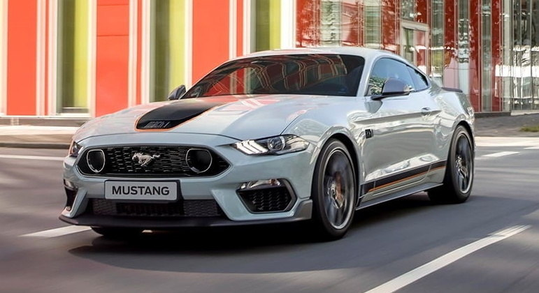
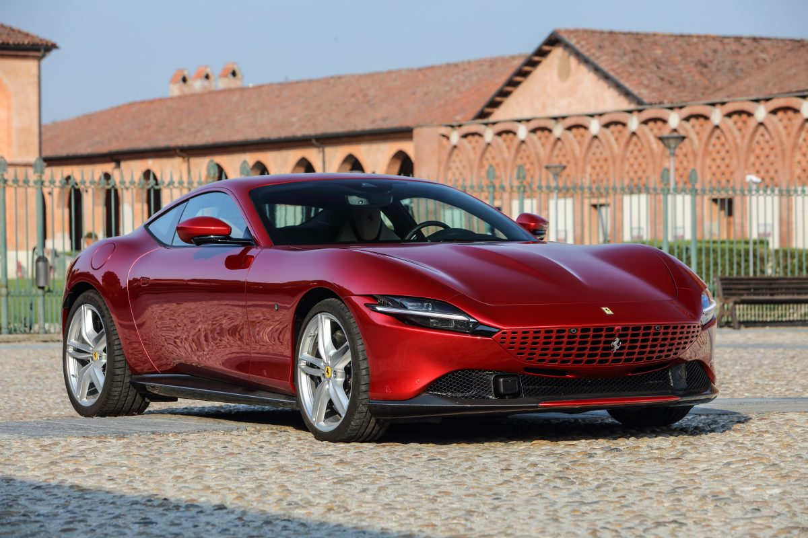

Amantes de carros esportivos, podem se animar e começar a fazer a contagem regressiva para 2023. O próximo ano será recheado de lançamentos com aquela dose extra de pimenta. Literalmente, as novidades vão de Volkswagen Polo GTS a SUV da Ferrari.
 O rei dos carros esportivos produzidos em série oferecidos com uma caixa de câmbio manual é o Porsche 911 S/T, o cupê que comemora o 60º aniversário do 911 e é equipado com o mesmo motor de 4,0 litros naturalmente aspirado de 525 cv do 911 GT3 RS. 